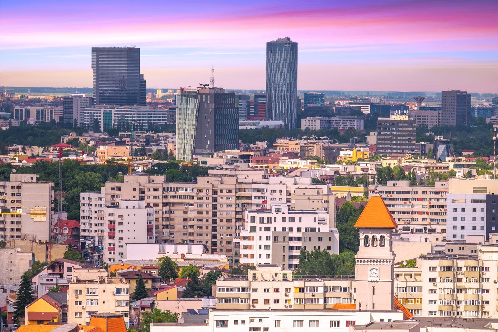
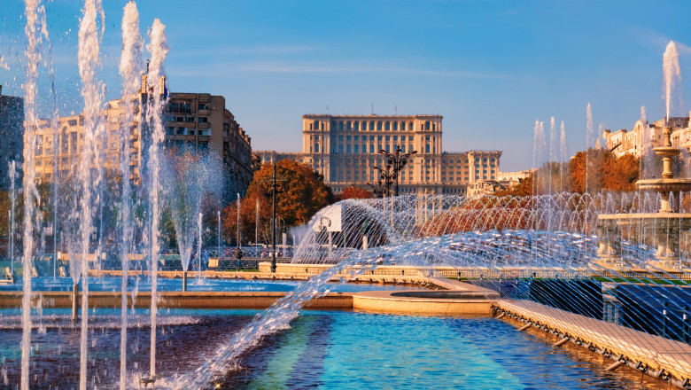
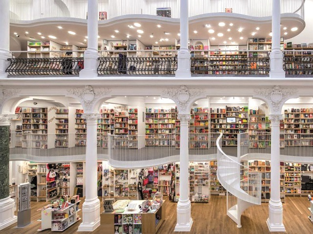

Like Erol Ozan said Some beautiful paths can’t be discovered without getting lost
,so, let's take a look at their opinions about the city.
- The blogger from
europeuntraveled
said:
- So, you’re thinking of visiting Romania and, naturally, you’re thinking that a trip to the Capital– Bucharest– is the best place to begin. After all, a country’s capital is usually the most significant and beautiful place to visit, a portal into the heart and soul of a country. Except this is Romania, and what applies to the rest of the world most certainly doesn’t apply here. The truth is, Bucharest is an interesting, bustling, and entertaining city. It is also dirty, vapid, and underwhelming as a tourist destination. Though the city has a rich history, little remains of its past and most of the city is a gray, concrete sprawl, the remnants of a failed communist experiment. To truly appreciate Bucharest, you need to really understand it; and that understanding won’t come over the course of a 3-day stay here.

- Before I continue my tirade on Bucharest, I should probably preface my comments: I actually really like Bucharest. Don’t get me wrong, I think it’s a place with a lot of great people, great parks, and great energy. I really enjoyed living there and I would gladly move back. For travelers, though, I don’t feel Bucharest is a great place to get to know Romania. Continue. During Romania’s communist period, Nicolae Ceausescu cleared out many of the city’s traditional neighborhoods in order to build the city’s grand boulevards and tributes to socialism. In the process, Ceausescu managed to erase much of Bucharest’s original beauty and historical architecture. What remains today is a landscape dominated by gray, boxy apartment buildings which house the majority of the city’s population. Though many of the city’s neighborhoods have launched ambitious renovation projects, the communist-era housing units are presently in complete disarray. They are gray, covered in graffiti, and crumbling. To add to the overall seedy ambiance, stray dogs commonly roam the streets. If this is your first time visiting a country outside of the US or Canada, then you may be a bit shocked.
- Hannah Meltzer said:
- Prepare to have a good gape at the Palace of the Parliament, a gargantuan concrete embodiment of communist-era might, erected in the 1980s under the Ceaușescu regime. It is the second biggest administrative building in the world after the Pentagon, and has yet to be surpassed on heft. Take a tour inside to see a small selection of the 1000-plus rooms and to marvel at the ornate interiors. It’s hard to miss the Memorial of Rebirth on Revolution Square - a 25 metre-high blood-soaked marble obelisk, piecing through a baffling basket-like structure. It wasn’t very well met by locals when it was unveiled in 2005, but you’ll definitely never forget it.
- In the early 20th century, Bucharest came to be known as the “Paris of the east” thanks to its Art Nouveau architecture and grand municipal buildings, often French-designed. This faded grandeur is now mixed with utilitarian buildings left behind from decades of communist rule. The town may be less classically beautiful now, but the hotch-potch of architecture makes for a unique and evocative aesthetic.Carturesti Carusel, located in the heart of the city’s buzzy Old Town (Lipscani) may be the prettiest shop you’ll ever see. A huge range of books, stationary and novelty items line the walls of this gorgeous galleried space. You can also peruse a wide vinyl collection in the basement and grab one of Bucharest’s most expensive coffees on the top floor.
 